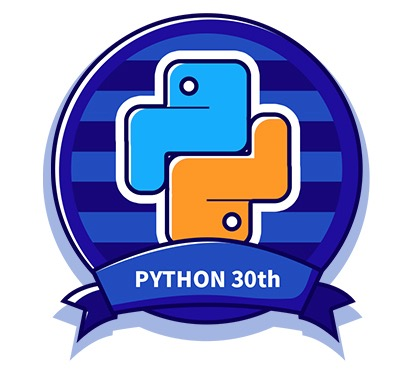

高龄程序猿自救指北
但行
ActionScript
1999
Flash ->
PHP
2000
ASP ->
NucleusCMS
2002
Blogging
CZUG
2003~07
Plone

啄木鸟
2004~2009
- MoinMoin 1.4.*
- -> Zim
- -> -> Notational Velocity
- -> -> -> ScrapBook
CPUG
2005~
SINA.com
BPUG
2006~
CPUG …
ZPUG
2007~2010
BPUG…
ECUG
2007 ~
- Erlang
- erlbattle
- …实效云用户组

TechParty.org
珠三角技术沙龙 2009 ~
ZPUG 太小
PyCon Asia Pacific
2010 新加坡
2011
PyConChina
不忿
PyCon中国
2012 ~
自己的 conference
GDG 珠海
2013 ~
Google+
2014
读易洞
线下读书会…
OMOOC.py
2015~18
有偿
自怼圈
170401 ~
知识付费
101.camp
181225 ~
服务大众
自筑社群
TFUG 珠海
190214 ~
AI 落地
好事
开发
本分
- 3D 动画
- 职业顿悟
- …
管理
过程改进
用技术改善技术人生活品质
写作
爱好
22CC


社区
感召
- 参与
- 理解
- 服务
- 发起
- 策划
- …
社群
社区群落 ~> 私域流量
- 有关联
- 场景向
- 自运营
- …
自怼
DebugUself
有心无心,自然聚焦

莫问
35
门槛值
高龄
程序猿的自救
45
常见
方向…
专家
天下第一
管理
产品/开发/…
创业
十死无生
投资
看起来很美
钱生钱
咨询
天下第几?
培训?
挂靠/教师证/…
转行
农业/餐饮/…
蛰伏
家领导给力…
恩格尔系数
Engel’s Coefficient
居民家庭中食物支出占消费总支出的比重
自救系数
SelfRescue’s Coefficient
被动收入占总收入的比重
被动收入比
睡后收入 ;-)
< 0.1 苦力< 0.4 超市自由< 0.8 职业自由> 1.0 人生自由
差异
核心区别
- 职业…
- 脱产…
商品
构成
- 自己的…
- 时间/精力/经验/…
- 作品的…
- 品质/思想/价值/…
눈_눈
提醒
前程
目标
超市自由
睡后收入++
流量
莫愁前路无知己
天下谁人不识君
企业
传统流量
定投…
流量资金
文创
娱乐流量
技术?
自动流量
靠谱
Kaopulity
- Keep
- all
- of
- processes
- usability
纷繁
可用不难
难在同时
私域流量
从何而来?
- 长期坚持
- 品质保证
- 信赖累积
养望
名声可养
宅
复合魂器 ;-)
玩
也得认真
- 成功只是成功人士的习惯…
渐进
10年不多
现在开始
蟒营™
101.camp
不仅因为一个好域名…
自毁倾向
190711 Linux中国
学习->学习
正义自学
2002…开始下意识积累…
探索17年
181225 蟒营™Python 入门班
开始
困难才能变成问题
Aristotle
“For the things we have to learn before we can do them, we learn by doing them.”
亚里士多德
“我们通过做来学习
我们必须学习去做的…”
~ 伦理学
意识
要去作什么…
比能作什么重要
(￣▽￣)
눈_눈
提醒
内省
不忘初心…
- 什么是企业?
- 什么是产品?
- …
https://blog.101.camp/DM/191022-pycon19nn/askdama@googlegroups.com
幻灯
NOT PPT
是也乎
- 191026 speech
- 1010 appended …
- 2242 fixed
- 191020 pub
- 191001 重构
- 190910 re-init.
- 190801 init.
sociallearnlab.org
社区顾问